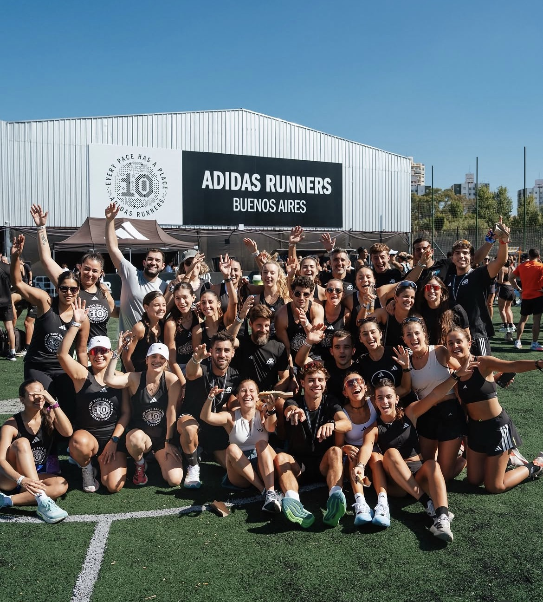
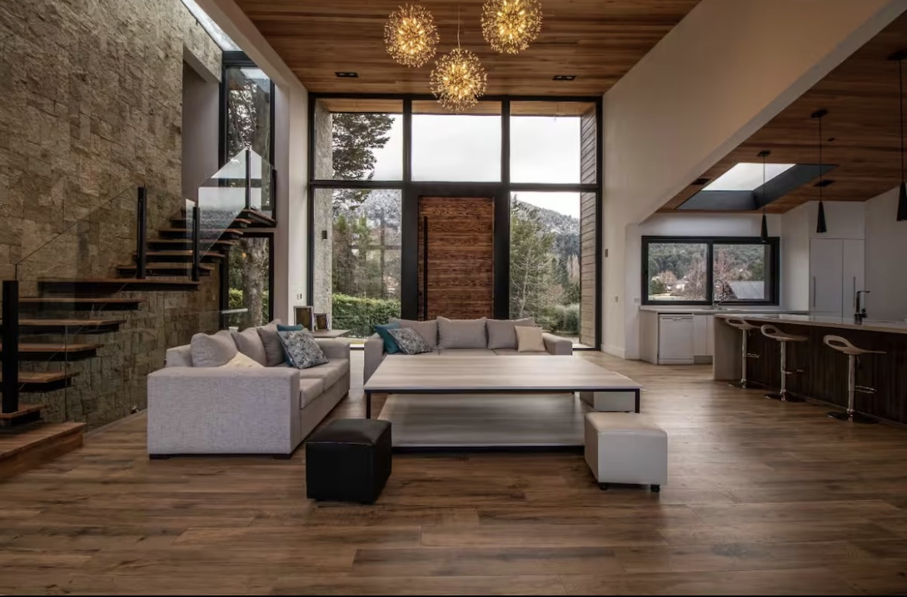
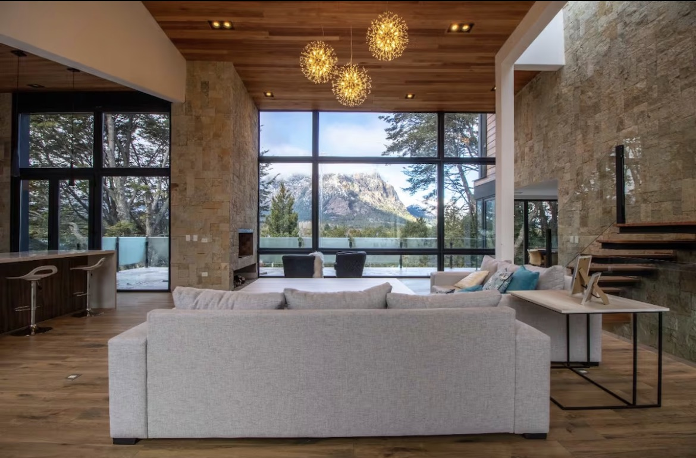
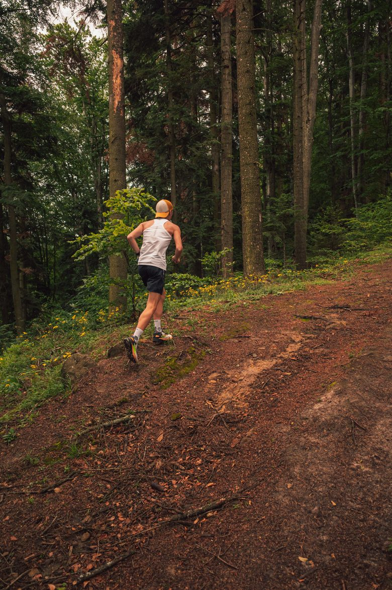
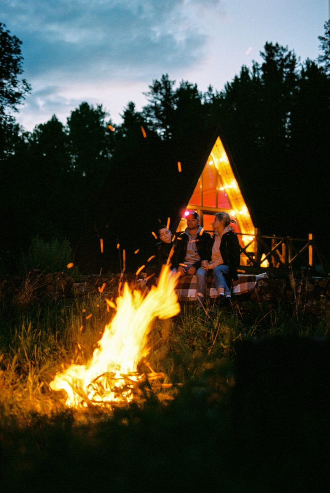
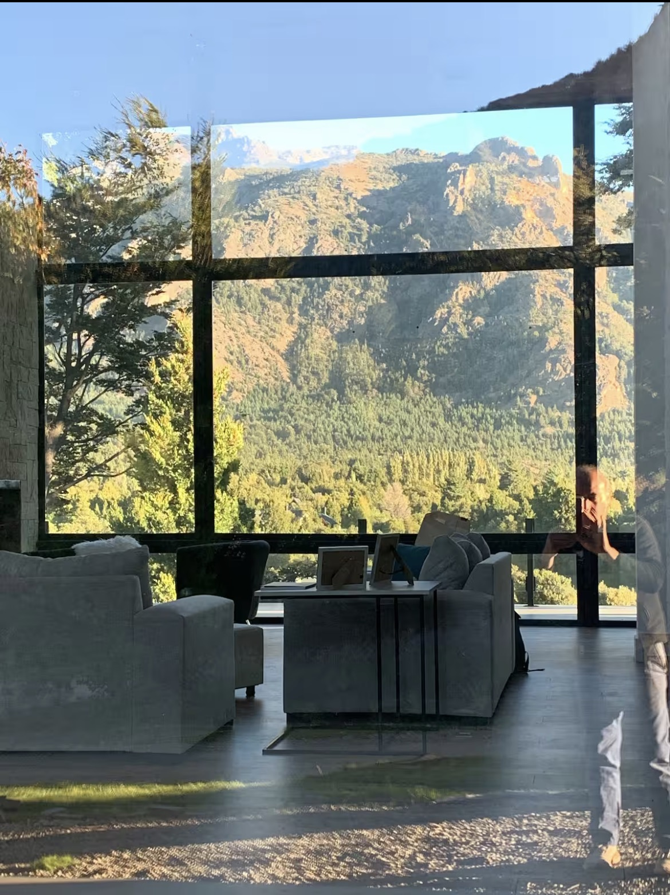
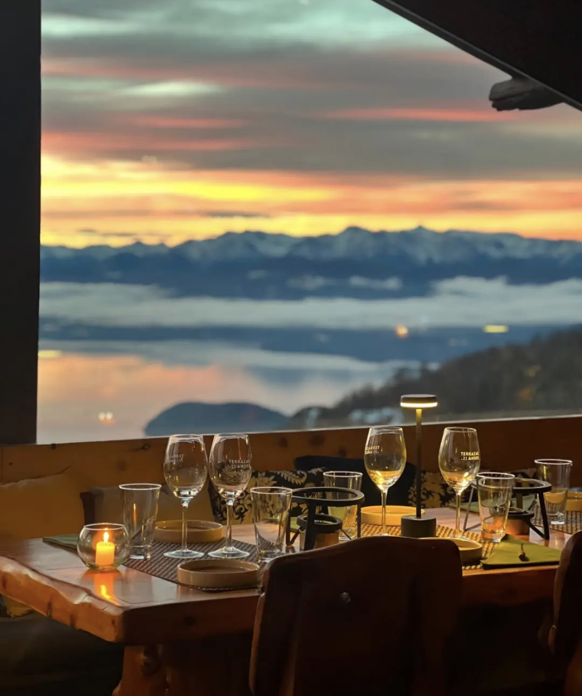
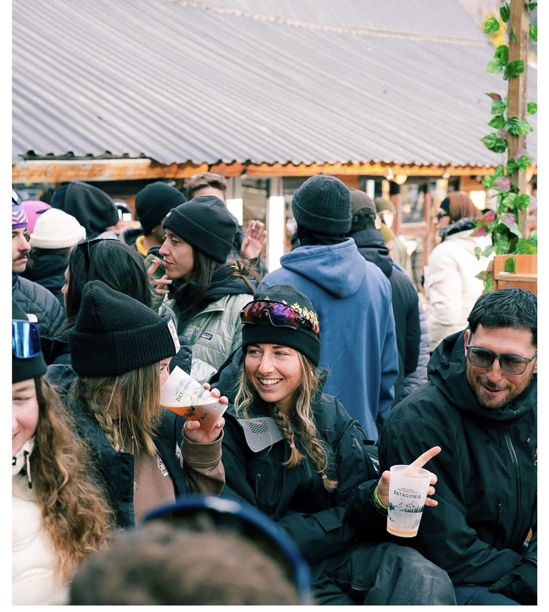

Trailmates · Experiencia Exclusiva · Bariloche 2026
Scrolleá para abajo y enterate.
¿Qué es Trailmates?
Trailmates nació en Bariloche, de la mano de gente que conoce la montaña de memoria. Años de trabajar puertas adentro de esta cordillera nos dieron acceso a lo que no está en ninguna guía: casas privadas, refugios con la vista que nadie te muestra y una red de trail runners que ya corrieron cada metro de este recorrido.
Con esa red armamos algo que va mucho más allá de resolver alojamiento, comida y traslados: experiencias diseñadas para volarle la cabeza a tu equipo. Todo gira alrededor de El Cruce de los Andes — pero lo que se llevan es mucho más que una carrera.




Dónde van a estar
Casa privada en Arelauken — piedra, madera, ventanales del piso al techo y el Cerro Catedral en primer plano.

El almuerzo especial
Un almuerzo en altura con vista panorámica al Nahuel Huapi. Mesa privada, vinos patagónicos y la cordillera de fondo — el plan perfecto el día previo a la carrera.


Todo resuelto
Barrio cerrado exclusivo. La casa es de tu equipo los cuatro días, con todo el espacio para vivir el Cruce como se merece.
Desde que llegás hasta que te vas. Airport transfer, traslados al Cerro, a la largada, al refugio y todo lo que necesites.
Desayunos, almuerzos y cenas. Menú pensado para rendimiento, con almuerzo especial en refugio de montaña.
Espacio exclusivo Trailmates en la base durante la carrera. Tu equipo con base de operaciones propia.
Charla con profesionales del trail: estrategia, nutrición y logística del recorrido antes de largar.
Programa de recuperación activa. Porque el cuerpo lo pidió y el equipo se lo merece.
El programa día a día
Transfer desde aeropuerto o terminal. Check-in en la casa de Arelauken. Cena de bienvenida con vista a la cordillera.
Charla técnica con profesionales del trail. Almuerzo especial en refugio de montaña con vista al Nahuel Huapi.
Transfer a la largada. Base exclusiva Trailmates en el Catedral. Llegada, celebración y cena de equipo.
Programa de recuperación activa. Desayuno sin apuro. Transfer de salida. Hasta la próxima.
Reservas abiertas
⚡ Cupos limitados
Mandanos un mensaje para conocer disponibilidad, capacidad y precio. Los cupos son limitados y la casa no espera.
Consultar por WhatsApp